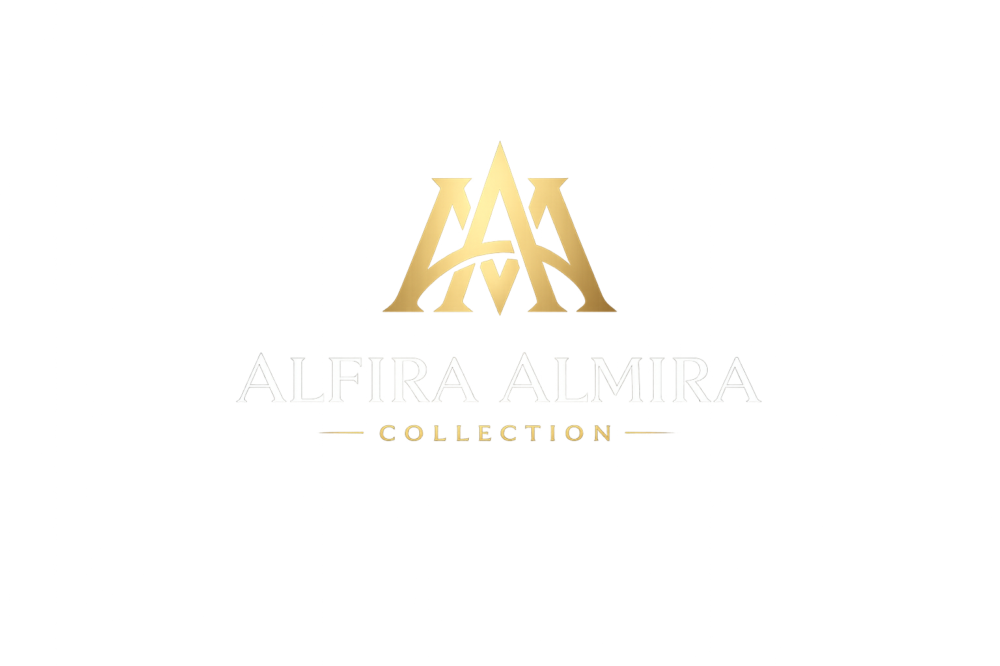

Bun,saya bikin sesuatu buat bunda...! beberapa waktu lalu bunda tanya saya soal SHOPEE, saya malah jadi kepikiran.
Apakah Marketplace adalah solusi yang tepat untuk pengembangan bisnis ini?
Dari situ saya mulai melihat lagi bagaimana bisnis ini berjalan, apa yang berubah, dan kira-kira peluang apa yang masih bisa kita manfaatkan. Dan hasil dari pengamatan saya, saya masukkan disini. Saya pikir sayang kalau hanya saya simpan sendiri,jadi saya mengajak bunda untuk melihatnya bersama.
Sebelumnya, saya mohon maaf kalau ada pengamatan saya yang kurang tepat, atau mungkin ada bagian yang terkesan seperti saya sok tahu. Karena saya sadar, Bunda dan Abanglah yang membangun bisnis ini dari nol dan jauh lebih memahami perjalanan Alfira Almira Collection daripada saya.
Saya hanya mencoba melihatnya dari sudut pandang saya, kemudian menghubungkannya dengan apa yang sedang saya tekuni di dunia digital saat ini.
Belakangan ini saya memang sedang menekuni dunia digital dan beberapa kali menyusun konsep digital untuk kebutuhan bisnis, baik untuk UMKM maupun perorangan. Dari situ saya mulai terbiasa melihat sebuah bisnis bukan hanya dari sisi penjualan, tetapi juga dari sisi sistem, proses, customer journey, dan aset digital yang dimilikinya.
Namun kali ini terasa berbeda. Mungkin karena saya pernah menjadi bagian dari bisnis ini, ada rasa tanggung jawab dan ikatan emosional tersendiri bagi saya.apalagi dulu saya sadar banyak mengecewakan abang & bunda, dari rasa tanggung jawab itulah saya mencoba mengamati kembali walaupun tanpa diminta.
meskipun sekarang saya sudah tidak terlibat lagi, perjalanan itu tetap menjadi sesuatu pengalaman yang berarti buat saya.
Jadi apa yang Bunda akan lihat di sini bukan sebuah janji bahwa omzet pasti akan naik. Ini hanya hasil dari apa yang saya amati, apa yang saya pelajari, dan beberapa peluang yang menurut saya layak untuk di pertimbangkan dan kita lihat bersama. Silahkan dibaca pelan-pelan. Semoga bermanfaat dan mungkin bisa membuka peluang baru untuk Alfira Almira Collection.